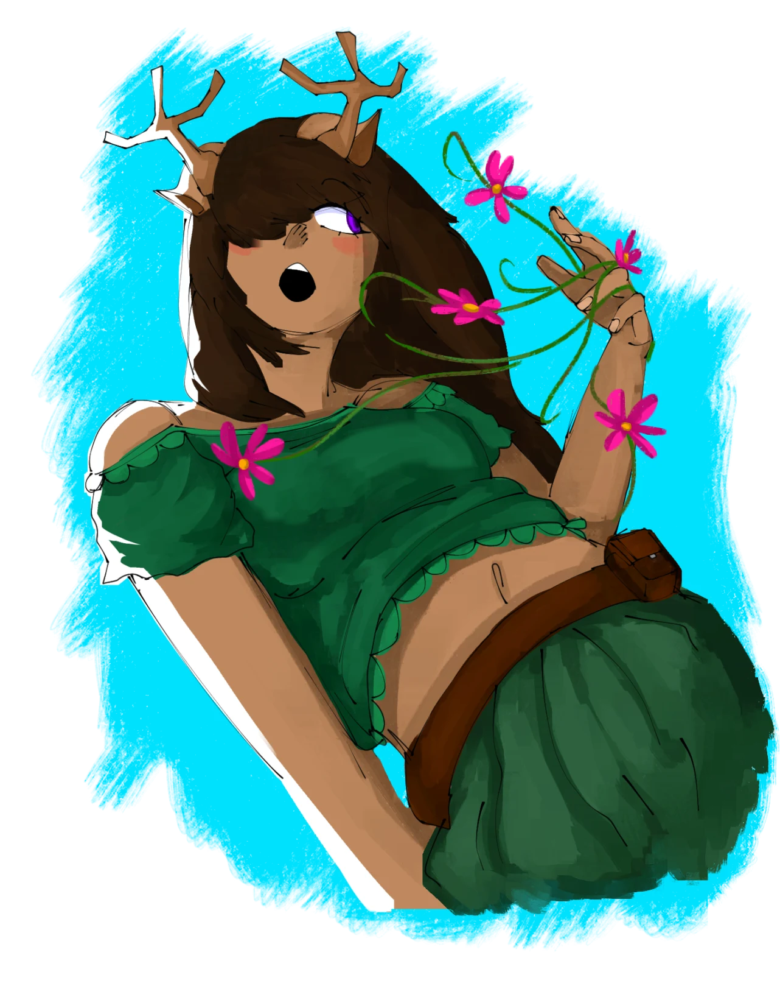
Akivus
Figura ilustrada: Elleonor
Seres que vivem principalmente na floresta que possuem muita afinidade com a fauna e a flora, são capazes de criar plantas. Possuem chifres longos que se assemelham a de alces com vinhas e flores ao seu redor, a grande maioria tem coloração de pele parda e são geralmente mais altos que humanos (tendo 1,80m ou mais).
Bônus de Raça
- Naturalmente +1 em Saúde
- Naturalmente -1 em Resistência Física
- Naturalmente +1 em Resistência Elemental
- Fraqueza contra Podridão
- Resistência contra Sagrado e Dano Gélido
Habilidades de Raça
Afinidade com plantas
Criação de vinhas
Cria vinhas que podem ser usadas para amarrar coisas. Ação Padrão
Névoa Perfumada
Cria vinhas com flores que soltam pólen com cheiros fortes que podem atordoar algum alvo. Ação Padrão
Cheiro do Perigo
O Akivus pode ficar parado durante um tempo para sentir o cheiro de quaisquer possíveis ameaças ao redor dentro de um raio de 8m. Passiva
Regeneração Verde
Quando em contato direto com o solo ou cercado por vegetação, os Akivus podem acelerar sua regeneração natural, curando-se de ferimentos leves em um curto período de tempo. A cada 2min curando 2d8 de vida. Passiva
Passo Silencioso
Os Akivus conseguem mover-se silenciosamente pela floresta, passando despercebidos por inimigos e evitando armadilhas naturais. Isso os torna excelentes caçadores e batedores. Eles não fazem nenhum barulho ao andar, caso queiram correr sorrateiramente, devem rolar um teste de furtividade. Passiva
Aura de Vitalidade
Em uma área de até 3B ao redor do Akivus, plantas e seres vivos se tornam mais resistentes e vigorosos. Aliados dentro dessa área recebem um pequeno bônus temporário em saúde e RF de +2 e ganham +25 de vida durante 2 turnos gerais. Ação Padrão -70 Energia Astral (15 PE caso Sobrevivente)
Raízes Constritoras
Invocando raízes do solo, os Akivus podem usar uma ação bônus para prender um inimigo, esmagando-o lentamente com força esmagadora. As raízes causam dano contínuo enquanto mantêm o alvo imobilizado. O alvo deve rolar um teste de RF (CT 18). Causa 2d8 de dano por turno. Ação Bônus -100 Energia Astral (20 PE caso Sobrevivente)
Explosão Floral
Ao chegar no nível 10 o Akivus pode criar uma flor especial que pode ser usada como uma espécie de granada, ao entrar em contato com um inimigo ou superfície, explode em uma rajada de espinhos e pólen tóxico. Esse ataque afeta uma área que atinge todos em um raio de 5B, causando dano aos inimigos próximos e envenenando-os (Teste Inimigo de Saúde). 2d8 de veneno por turno até o fim da cena e 3d15 de dano padrão de perfuração. Ação Padrão -100 Energia Astral
Híbridos
São pessoas que desde a segunda grande guerra e após a Era Dourada foram modificadas geneticamente pelo governo do reino de Paladium e desde então eles se espalharam no mundo e são vistos como uma raça normal. É dividida em sub-raças:
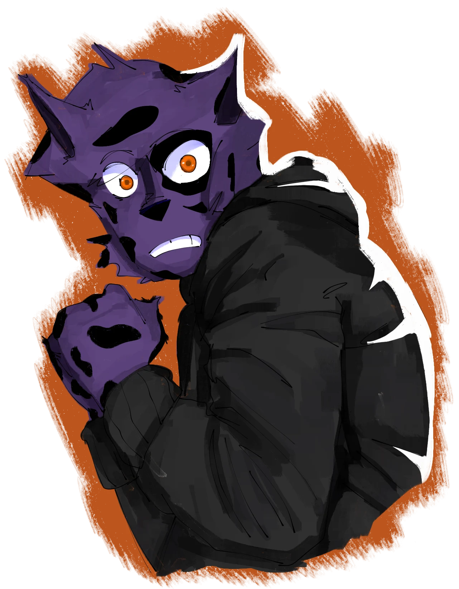
Animalescos
Figura ilustrada: Luther
Animais antropomórficos ou pessoas com características de animais.
Bônus de Raça
- Naturalmente +1 em Des
- Naturalmente +1 em Sen
- Fraqueza a dano Sonoro
Habilidades de Raça
Percepção Aprimorada
Pode rolar um teste de Sen + 2 para poder tentar perceber algo interessante ou algo escondido.
Quadrúpede
Pode usar uma ação bônus para usar todos os seus membros para se locomover ganhando +4 de Des e recebendo vantagem em testes de esquivas enquanto está nessa posição porém não pode executar ações bônus nem ações completas. A habilidade pode ser ativada como uma ação bônus depois de uma ação padrão. Ação Bônus
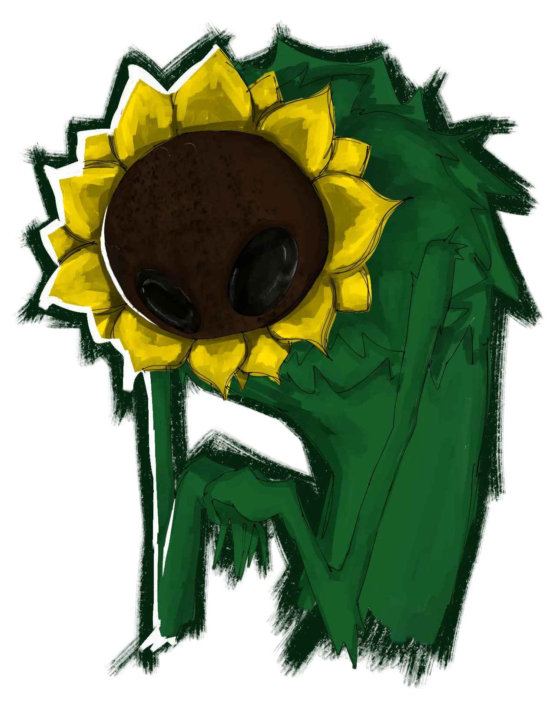
Plantíferos
Figura ilustrada: Tuko
Plantas humanoides ou pessoas com características de plantas.
Bônus de Raça
- Naturalmente +2 de Saúde
- Naturalmente +1 em FAMA
- Fraqueza a Solar e Podridão
Habilidades de Raça
Afinidade com plantas
Podendo se comunicar com elas.
Criação de vinhas
Cria vinhas que podem ser usadas para amarrar coisas.
Névoa Perfumada
Cria vinhas com flores que soltam pólen com cheiros fortes que podem atordoar algum alvo, fazendo-o rolar um teste de RE. Vda: 18.
Canção das Árvores
No nível 3, o plantifero aprende a se conectar com as árvores, ouvindo as batidas frenéticas de seu corações como tambores. Conseguindo criar e controlar qualquer forma de madeira na natureza.
Nível 3 - Punhos rítmicos
Ao calor de uma batalha, o plantifero pode ativar seus punhos rítmicos, após uma vez ativados, eles sempre continuam ativos até o final de uma batalha. Enquanto ativos, o plantifero não pode fazer ações bônus e ganha 25 de vida extra na hora. A cada ataque do plantiféro, grandes estruturas de madeira com formatos retangulares emergindo do chão, irão em direção ao alvo atacado seguindo o ritmo do Bpm (Batimentos por minuto) do plantifero, que deverá ser rolado após ativar a habilidade que será de acordo com:
Exemplo: 1d30 = 10 ÷ 2 = 5 = 3d5
No nível 13, invés de 1d20, passa a ser 1d40.
Nível 10 - Ritmo de Animação
O plantifero cria dois tambores de madeira em sua frente e começa a batucá-los no ritmo de seu Bpm, criando uma área circular de 4 Blocos de área rodeada por notas músicas Astrais douradas que vibram no ritmo animador da música. Quem estiver nessa área ganhará um escudo protetor de 25 de vida que se sobrepõem à vida do aliado, absorvendo os danos. Além disso, os aliados também ganham +2 em testes de esquiva.
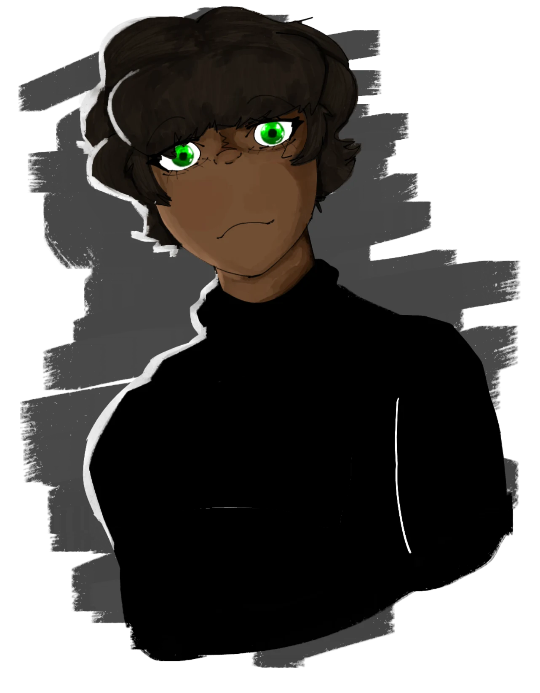
Humanos
Figura ilustrada: Akali
Os humanos são seres abundantes e resilientes, adaptados a diferentes ambientes do mundo. Embora não possuam habilidades inatas extraordinárias, compensam com uma notável capacidade de aprendizado, versatilidade e inovação. São conhecidos por sua prosperidade e por formar sociedades diversificadas, que vão de pequenas comunidades a grandes impérios.
Bônus de Raça
- Naturalmente +1 em todos os Atributos
- Fraqueza a Pesadelo
Habilidades de Raça
Determinação Implacável
Com um teste de saúde (CT 15), após cair pode continuar lutando até receber um número de ataques igual a metade do bônus de proficiência arredondado para cima.
Adaptação Humana
Mesmo sendo uma raça considerada um pouco mais fraca, ao chegar em um ponto de extrema tensão o humano desperta suas habilidades físicas, aumentando assim suas capacidades. Quando estiver com menos de 25% do hp, o humano recebe +2 de força e destreza até o fim da cena.
Aprendizado Rápido
O humano é capaz de observar e copiar habilidades de outros, desde que tenha capacidade física e mental de executá-las. Para copiar uma habilidade, o humano deve ter presenciado a habilidade sendo usada durante a batalha ou uma interação similar, e ela deve ser algo que ele seria capaz de realizar com seus atributos e treinamento.
Força de Vontade
Uma vez por descanso longo, quando o humano falhar em um teste de resistência, ele pode refazê-lo com um bônus de +3.
Inovação
Humanos são mestres em resolver problemas de maneira criativa. Ao criar itens, armas ou até mesmo estratégias, um humano pode gastar tempo extra (o dobro do tempo necessário) para aprimorar o item ou plano, concedendo um bônus de +2 no teste necessário. Gastar o dobro do tempo faz o humano usar 2 Ações Padrões caso esteja em combate (2 turnos inativos).
Resiliência Humana
Humanos podem se recuperar rapidamente de condições debilitantes. Ao início de cada turno, eles podem fazer um teste de Saúde (CT 14) para remover uma condição negativa, como envenenamento, atordoamento ou paralisia.
Força Interior
Quando o humano está em uma situação de perigo extremo ou emocionalmente intenso, ele pode canalizar uma reserva interna de energia. Isso concede um bônus temporário de +2 em qualquer atributo de sua escolha (exceto Resistência Elemental) até o fim da cena. Essa habilidade pode ser ativada uma vez por descanso longo.
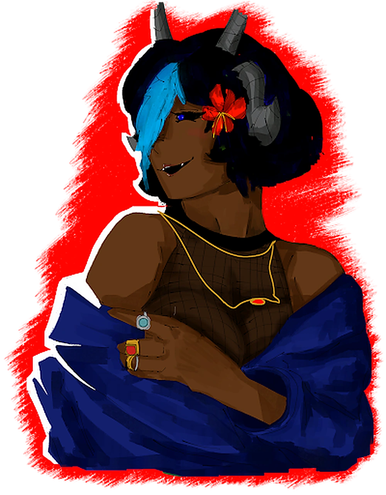
Vampiros
Figura ilustrada: Friede
Seres com aparência humanoide com a pele um pouco pálida e com dentes caninos maiores, se alimentando principalmente de sangue, a maioria deles tem olhos vermelhos e as mulheres têm corpos mais curvados e os homens corpos mais definidos, são naturalmente bonitos e elegantes.
Bônus de Raça
- Naturalmente +1 em Saúde
- Ganham +1 em FAMA
- Fraqueza a Praga
- Resistência à Pesadelo
Habilidades de Raça
Visão no Escuro
18m
Mordida Vampírica
Os vampiros têm presas afiadas e podem morder uma vítima para extrair sangue. Ao fazer isso, eles podem causar dano e se alimentar, restaurando seus próprios pontos de vida. Eles também podem controlar a quantidade de sangue extraída para evitar matar a vítima.
Frenesi Sanguíneo
Em momentos de grande emoção ou necessidade, os vampiros, quando estiverem com 20% ou menos de sua vida máxima, podem entrar em um estado de frenesi sanguíneo, aumentando temporariamente sua força e agressividade. Durante esse frenesi, eles podem causar danos extras em combate, ganhando uma rolagem adicional de dano sem a necessidade de Acerto.
Vínculo de Sangue
Os vampiros podem estabelecer um vínculo de sangue com um aliado, compartilhando temporariamente sua força e vitalidade. Enquanto o vínculo estiver ativo, o vampiro e o aliado compartilham parte do dano recebido e da cura recebida na metade, tornando-os mais resilientes juntos. -30 Energia (5 PE caso Sobrevivente)
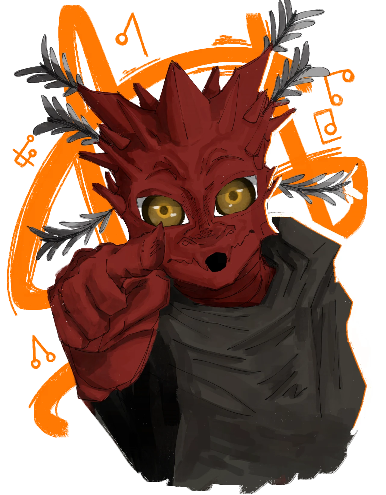
Dragão Anão
Figura ilustrada: Alkar
Originários do pequeno e hostil continente de Tragnor, os Dragões Anões são seres dracônicos de baixa estatura, variando entre 1,00m e 1,45m de altura. Apesar do porte diminuto, possuem corpos resistentes recobertos por escamas de cores diversas, que vão de tons vibrantes a metálicos e opacos. Sua fisionomia é um híbrido elegante entre dragão e humanoide, com chifres curvos, cauda longa e ágil, e seis antenas peludas com cerdas sensoriais na parte de trás da cabeça.
Essas antenas permitem uma forma única de comunicação telepática rudimentar, transmitindo emoções, impressões ou imagens simples para outros Dragões Anões ou criaturas empáticas.
Grande parte da população de Tragnor vive em comunidades tribais espalhadas pelas florestas, cavernas ou planícies íngremes do continente. Essas comunidades, embora vistas por forasteiros como "primitivas", mantêm uma estrutura social sofisticada, marcada por rituais de caça, danças cerimoniais e profundo respeito aos ancestrais dracônicos. Sua cultura é preservada por meio de um idioma próprio, chamado Idioma Antigo, um sistema de escrita e fala exclusivo da raça, repleto de símbolos e entonações que carregam significados complexos e muitas vezes impossíveis de traduzir completamente.
Devido à instabilidade de Tragnor, muitos Dragões Anões migraram para o continente principal, Terras Longínquas, formando pequenos grupos nômades ou comunidades ocultas. Mesmo longe de sua terra natal, preservam o Idioma Antigo como forma de manter viva a conexão com suas raízes.
Bônus de Raça
- Naturalmente +1 em Destreza
- Naturalmente +1 em Intelecto
- Naturalmente -2 em FR
- Naturalmente -2 em RF
- Resistência Elemental: escolha Solar, Estase ou Ácido
- Mente Focada: vantagem em testes para resistir a efeitos de confusão ou controle mental
Habilidades de Raça
Sopro Ancestral
Expele um cone de energia elemental correspondente à sua resistência (Fogo e Solar, Estase ou Ácido) em um raio de 3B à sua frente. Inimigos na área devem rolar um teste de RES Destreza (CT 15) ou sofrer 3d10 de dano elemental. Sem custo
Conexão Sensorial
As seis antenas permitem comunicação telepática limitada com criaturas a até 10B, transmitindo emoções, intenções simples ou imagens mentais. Passiva
Improvisador Nascido
Você pode gastar uma ação bônus para ativar uma engenhoca improvisada (com aval do mestre), criando distrações, faíscas, fumaça ou destrancando mecanismos frágeis. Essa habilidade só pode ser usada 2 vezes e é recuperada após um descanso curto ou longo.
Instinto de Sobrevivência
Vantagem em testes de Sobrevivência e Navegação em ambientes como: florestas densas, zonas instáveis ou ruínas perigosas.
Camuflagem Natural
Recebe +2 em testes de Furtividade
Ataque Escondido
Se estiver escondido ou invisível para o inimigo, causa 1dDes×2 de dano extra em um ataque corpo a corpo ou à distância.
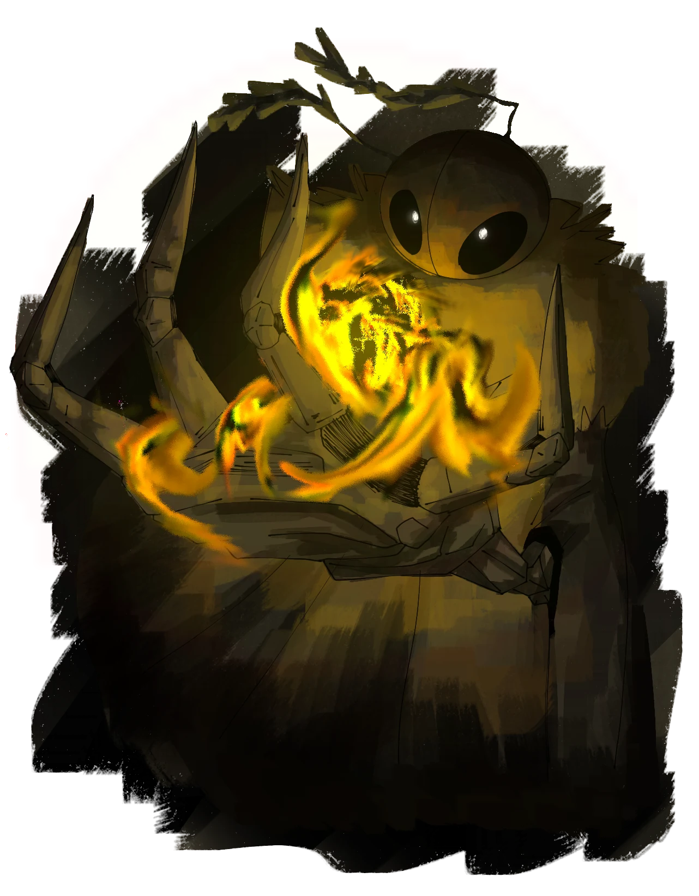
Insectóides
Figura ilustrada: A mariposa
Insectóides são herança viva dos experimentos da Era Dourada humanos, principalmente crianças pobres, fundidas a traços de insetos como mariposas, formigas e moscas. Tentativa falha de Paladium de fazer humanos insetos. Carregam exoesqueletos, olhos que não piscam e membros estranhos, junto de uma natureza fria, calculista e, para muitos, cruel por instinto. Mesmo organizados em colônias e comunidades, raramente demonstram empatia genuína: negociam, convivem e cooperam por necessidade, não por afeto. Para o resto do mundo, continuam sendo lembrados como um povo de coração gelado, moldado para sobreviver não para sentir.
Bônus de Raça
- Naturalmente +1 em Des
- Naturalmente +1 em Resistência Elemental
- Naturalmente +1 em INT
- Naturalmente -4 em FAMA
- Naturalmente Proficiência em testes de intimidação
- Sensibilidade a Luzes Fortes
- Fraqueza a Solar e dano Gélido
Habilidades de Raça
Reputação Negativa
Os insectóides aprenderam a transformar o medo e o preconceito que o mundo tem deles em uma arma social. Onde os outros veem monstruosidade, eles veem vantagem. Converte o redutor natural de -4 em FAMA em +4 de FAMA exclusivamente para testes de Intimidação.
Vínculo
Os insectóides podem escolher um vínculo com 1 elemento à sua escolha. O Insectóide pode escolher 1 entre os elementos Podridão, Nulídrico, Pesadelo e Sombra. A cada elemento escolhido, o insectóide ganha duas habilidades por cada elemento escolhido.
Podridão
Sentido Putrefato Consegue sentir qualquer criatura feita de podridão a 6 Blocos de distância.
Engula Lodo Pode agarrar um alvo a 2 Blocos de distância fazendo ele engolir lodo de podridão causando 2d15 de dano e causando estado de paralisia durante 1 rodada. O Alvo pode esquivar com um teste de Des. (Liberada no nível 7)
Nulídrico
Vórtice sem fim Cria uma pequena esfera flutuante com Nulídrico que suga ar e enfraquece até 3 alvos em um alcance de até 4 Blocos, fazendo eles perderem -2 em dados de esquiva. (Liberada no nível 7)
Sacrifício de Vida Usa 35% de Vida para criar duas armas feitas de nulídrico que fazem ataques adicionais aos ataques padrões do Insectoide. O dado de dano das armas são de acordo com 50% da vida total do Insectoide.
Pesadelo
Lembre-se Em uma área de 5 Blocos o Insectóide pode causar um dano mental (2d10) a um alvo consciente, mostrando coisas horríveis que o insectóide desejar e deixa o alvo Paralisado.
Ilusão Amedrontadora Cria uma ilusão a escolha do Insectóide que apenas o alvo pode ver, se o alvo for mal sucedido em um teste de RE ele ficará paralisado durante uma rodada.
Sombra
Medo Com uma ação bônus, sussurre palavras de medo e veja-os sofrer lentamente caso falhem em um teste de INT (CT:16). 4d12 de dano. (Liberada no nível 10)
Toque da Maldade Toque no alvo para atordoá-lo durante 1 rodada e fazer ele escutar vozes em sua cabeça, ele deve rolar um teste de RE para tentar se livrar do atordoamento.
Habilidades Gerais
- Voo (Dependendo do Inseto)
- Visão no Escuro (Dependendo do Inseto)
- Escalada Aracnídea (Dependendo do Inseto)
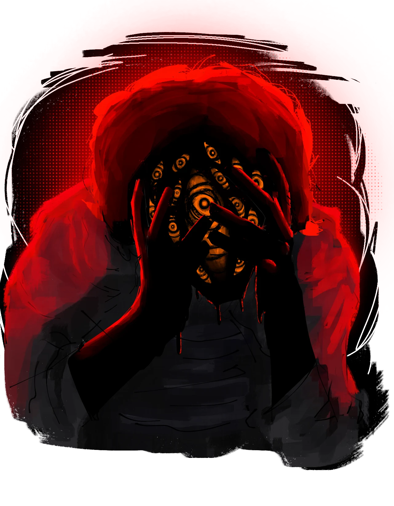
Praguentos
Figura ilustrada: A podridão
Seres que personificam a zombaria da vida. Condenados pela Podridão a renascer como pálidas cópias do que foram, cobertos por lodo negro e viscoso, com a aparência deformada de uma lauma esquecida com seu rosto coberto de olhos alaranjados. Fazem parte de uma mente coletiva distorcida ouvem, sentem, mas tudo em ruídos, como ecos de uma existência que não deveria mais ser.
Bônus de Raça
- Naturalmente +1 em Des
- Naturalmente +1 em Resistência Elemental
- Naturalmente -2 em Saúde
- Fraqueza a dano Gélido e Solar/Fogo
- Resistência a dano de Praga
- Imunidade a dano de Podridão
Habilidades de Raça
Manipulação do Lodo Corporal
Os praguentos podem manipular o lodo do seu corpo e usar de sua criatividade para criar várias coisas. Durante cada nível o praguento possui um limite de energia específica de quanto lodo ele pode formar e gastar vindo do seu corpo. O nome dessa energia é Energia de Lodo.
Recuperação Rápida
Além de descansar para recuperar a Energia de Lodo, o Praguento pode regenerar 10 de Energia de Lodo automaticamente a cada turno.
Caso a energia se esgote, o Praguento ficará com -1 em todos os testes que envolvem Dex e INT até que se recupere de volta com um descanso longo ou curto.
Criação de Itens
O praguento pode usar sua energia para criar utensílios, armas ou formas de ataques feitos de lodo de acordo com as definições:
Armas de Lodo
Pode criar uma Espada, Martelo, Foice e Machado que possuem uso de 3 rodadas, acopladas ao Praguento, são armas que causam 2d12 + DES de dano Físico e são usadas como ação bônus. Ação Bônus
Tiro Lamacento
Pode atirar até 5 projéteis rápidos de Lodo durante um turno. Cada um causando dano de podridão (2d10 + Des). Eles gastam 5 de Energia de Lodo.
Corpo de Lodo
O Praguento pode temporariamente transformar seu corpo em lodo puro, tornando-se imune a dano físico por até 2 turnos. Durante esse tempo, ele não pode atacar, mas pode se livremente através de qualquer abertura ou fenda. Esta habilidade custa 50 de Energia de Lodo e só pode ser usada uma vez por descanso curto ou longo. Pode ser usada fora de combate para locomoção em áreas complicadas ou de difícil acesso.
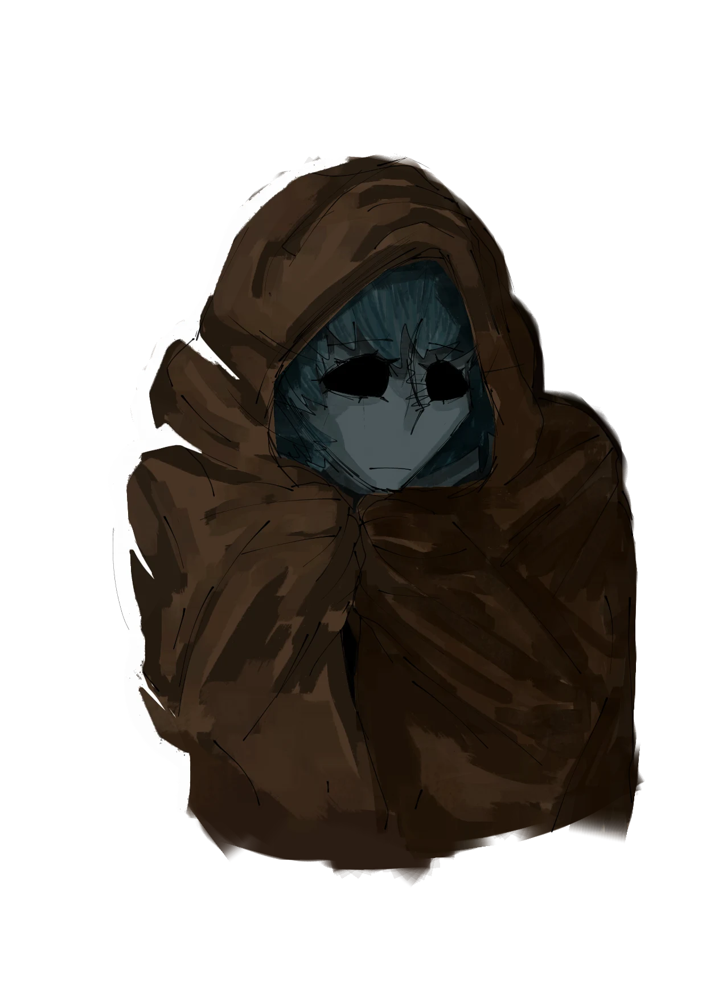
Abissal
Figura ilustrada: Janna
Seres que vivem no abismo abaixo da terra com corpos totalmente tomados pela praga, com a pele pálida, veias negras e olhos completamente pretos como um vazio. Com antenas bioluminescentes fortes como uma lâmpada fluorescente que também pode ser usada como comunicação com outros abissais.
Bônus de Raça
- Naturalmente tem -1 de Saúde
- Ganham +1 em Des
- Ganham +1 em Int
- Desvantagem testes de percepção em locais com luz forte
- Imunidade a Praga
- Fraqueza contra podridão
- Resistência contra Solar, dano Gélido e Pesadelo
Habilidades de Raça
Visão no Escuro
Alcance ilimitado
Luz amiga
Espalha esporos brilhantes com suas antenas que podem auxiliar as pessoas ao redor.
Pressentimento
Pode rolar 1d20 de percepção para poder perceber possíveis emboscadas ao redor.
Telepatia
Consegue usar suas antenas para se comunicar mentalmente com aliados.
Confusão
Usa sua telepatia para confundir um alvo imitando vozes que ele talvez conheça ou fazendo barulhos ensurdecedores, o alvo deve rolar um teste de INT contra um teste de INT com Atuação do abissal, caso o alvo seja mal sucedido ele ficará uma rodada impossibilitado de agir.
A Fome de Vinhas
O Abissal pode consumir vinhas de praga para ganhar bônus ou penalidades aleatórias que duram o efeito até que ocorra um descanso longo ou curto. Todo abissal começa com 8 vinhas e que podem ser adquiridas mais delas ao longo da jogatina por meio de descansos longos. Deve ser feito a rolagem de um dado de 1d7 pelo jogador para ver qual efeito foi aplicado.
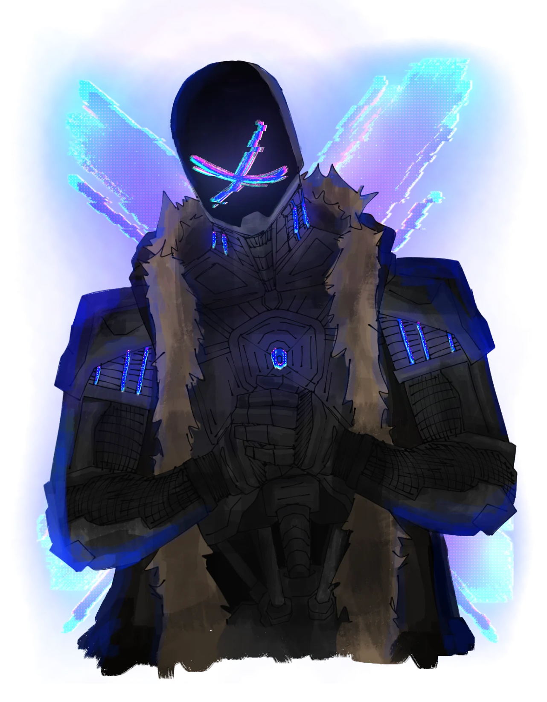
E.X.O.s
Figura ilustrada: R2.T
Uma espécie criada pelos engenheiros mais habilidosos de Paladium, feito para serem um sistema de proteção e segurança da cidade ou até de utilidade doméstica. Tem características robóticas e são feitos de um metal especial, alguns conseguem ter sentimentos próprios e desenvolver seus corações por alguma razão ainda não descoberta. O coração deles é movido por meio da energização do minério Everact, se o minério perder a energia, eles são desligados automaticamente.
Bônus de Raça
- Naturalmente +1 em INT
- Naturalmente +1 em FR
- Imunidade a dano de Fogo
- Imunidade a Praga
- Imunidade a Sangramento
- Imunidade a Envenenado
- Fraqueza a Podridão
- Fraqueza a Nulídrico
Habilidades de Raça
Exoesqueleto Autônomo
Pontos de Chassi (PCs)
O E.X.O. não possui vida biológica. Habilidades convencionais, poções de cura e primeiros socorros não surtem efeito sobre ele.
Autorreparo
Com 1 Ação Bônus, o autômato canaliza solda e recomposição interna sem custo de recurso, recuperando 2d8 + INT em PCs.
Estado "Morrendo"
Ao cair para 0 PCs, o autômato desliga. Os testes para estabilizá-lo exigem um teste de Engenharia, e não de Medicina.
Overclock
Sempre que estiver com 40 ou menos PCs, o núcleo Everact entra em sobrecarga contínua, concedendo:
- +1 em FR
- +2 em INT
- +10 em Defesa (DEF)
- +1d8 de dano extra em qualquer ataque realizado
Além das Fraquezas
E.X.Os conseguem ver registros astrais fragilizados em alvos. O E.X.O pode fazer a rolagem de um teste de INT para descobrir se um alvo tem um ponto com Energia Astral Fragilizada. Se tirar 20 ou mais, o E.X.O consegue saber qual é o ponto certo. O ponto certo é um local em que se for acertado, o inimigo toma o dano padrão do ataque em DOBRO. O dano em dobro só é aplicado em ataques feitos pelo E.X.O.
Nos níveis 10, 15 e 20, a CD desse teste é diminuída em -1.
Prensa Hidráulica
O E.X.O avança para agarrar uma criatura adjacente, ativando as travas de alta pressão dos seus atuadores.
O E.X.O realiza um teste de FR contra a FR ou RF do alvo; se vencer, a vítima fica Imobilizada e o E.X.O permanece ocupado sustentando o agarrão.
Enquanto estiver presa, a vítima sofre automaticamente 2d6 de Dano de Impacto + FR no início de cada um dos seus próprios turnos devido ao esmagamento contínuo. Para se libertar, a criatura deve gastar sua ação para disputar um novo teste resistido de FR contra a FR do E.X.O.
Torque Forçado
O E.X.O. trava suas engrenagens no solo para aplicar força mecânica bruta contínua.
Recebe Vantagem em testes de FR para erguer cargas colossais, arrombar estruturas metálicas, derrubar portas pesadas ou resistir a ser empurrado/derrubado por forças externas.
Mira Telemétrica
Como passiva, os sensores ópticos do autômato calculam automaticamente vento, distância, recuo e trajetória balística em tempo real. O E.X.O. utiliza o atributo de Inteligência (INT) somado aos seus testes de acerto com armas de fogo.
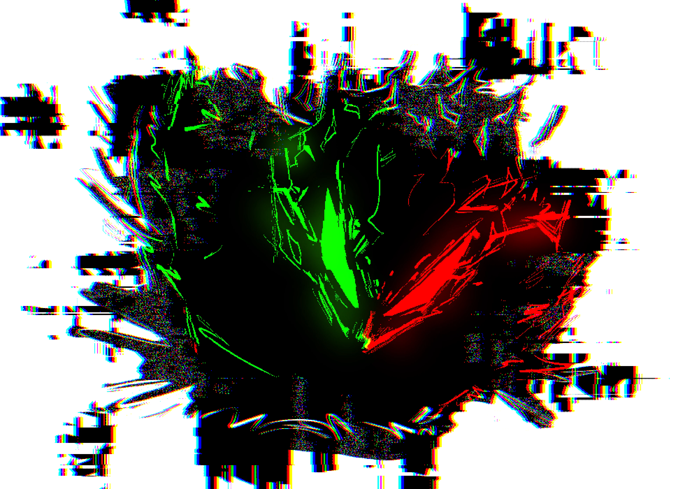
Espect@&%s
Figura ilustrada: Espectro
Os Espectros são cicatrizes vivas e erros de sintaxe no próprio tecido do espaço-tempo de Wuitalur. Quando um ser vivo morre, o fluxo natural de sua energia astral é a transição para "O Limiar"; por alguma falha cósmica, a energia dessas criaturas ficou presa no "carregamento". Sem o invólucro de um corpo físico para contê-la harmonicamente, essa energia se compactou de forma errada, forçando uma manifestação física corrompida. Eles não são apenas transparentes: eles piscam, distorcem, deixam rastros visuais e produzem estática, agindo como um glitch senciente na realidade. Por não possuírem carne ou sangue, as interações sociais com outras raças causam um desconforto profundo, quase uma repulsa biológica, pois seus movimentos parecem perder quadros de animação e sua voz sobrepõe frequências. Eles são o lembrete trágico de uma anomalia dimensional que o universo tenta, a todo momento, apagar.
Esta Raça é PROPOSITALMENTE injusta e difícil de jogar.
Bônus de Raça
- Naturalmente +1 em Resistência Elemental
- Naturalmente +2 em INT
- Naturalmente -2 em Força
- Sua Saúde sempre será 0
- Naturalmente Desvantagem em testes de interações sociais
- Fraqueza a dano Sagrado e Solar
Mecânicas Únicas
Estabilidade Cósmica
O Espectro ignora completamente a Vida fornecida por qualquer classe ou multiclasse que escolher, assim como ignora o atributo Saúde para o cálculo de seus pontos vitais. Sua vida é representada pela Estabilidade, que mede o quão bem sua mente consegue forçar a energia astral corrompida a se manter coesa na realidade.
Diferente de outras raças, o Espectro não possui um limite máximo de Estabilidade — ela pode acumular infinitamente. Quanto mais estável, mais difícil de ser apagado.
O Dado de Estabilidade do Espectro é 1d4.
No nível 1, sua Estabilidade inicial é 4 + Modificador de Intelecto.
A cada nível subsequente, o jogador rola 1d4 + Modificador de Intelecto e soma ao total de Estabilidade atual.
Limitação: O Espectro não pode receber cura de nenhuma fonte — magias, itens, habilidades ou descanso. Sua Estabilidade só aumenta através dos ganhos de nível e de mecânicas próprias da raça.
Instável (Estado de Morrendo)
Quando a Estabilidade do Espectro zera e ele entra no estado de morrendo, sua presença na realidade se torna completamente incompatível com o mundo físico.
Nenhuma criatura ou aliado pode ajudá-lo a se estabilizar. Testes de Medicina, primeiros socorros ou itens de cura físicos falham automaticamente ao tentar interagir com ele.
O Espectro depende única e exclusivamente de seus próprios testes de salvaguarda (resistência) contra a morte para recalcular sua existência e se estabilizar sozinho. Se falhar nos testes, o erro é permanentemente corrigido e ele é apagado da realidade.
Em compensação ao isolamento, o Espectro possui 5 testes de salvaguarda contra a morte (em vez dos 3 padrões) e ele precisa apenas tirar 19 no valor do dado, ao invés de 20. Se acumular as 5 falhas antes disso, ele é apagado da realidade.
Estalo de Estática
Toda vez que o Espectro finalizar uma Ação Principal ou uma Ação Bônus (seja de movimento, ataque ou conjuração), ele pode usar imediatamente sua Reação para disparar um pulso rápido de energia astral corrompida em um alvo a até 3B de distância. (Pode ser feita sempre que terminar qualquer ação, permitindo fazer isso mais de 1 vez por turno.)
Efeito: Causa 2d4 + Modificador de Intelecto de dano de Umbra.
Vínculo de Anomalia
Os Espectros podem escolher um vínculo com 1 tipo de falha na realidade à sua escolha. O Espectro pode escolher entre as ramificações: Desbordamento, Deslocamento, Corrupção ou Tela Azul. A cada ramificação escolhida, o Espectro ganha duas habilidades nativas de dano ou utilidade.
Desbordamento
Focado em sobrecarregar a mente dos inimigos com dados brutos.
Pânico no Sistema
O Espectro emite uma onda de ruído estático em uma área de 4 Blocos ao seu redor. Todos os inimigos conscientes na área devem passar em um teste de INT (CT 18) ou sofrem 2d8 de dano mental e ficam confusos, perdendo -1 em seus dados de ataque por 1 rodada.
Colapso de Realidade Nvl 7
Concentrando o erro em um único ponto, o Espectro faz o espaço tridimensional ao redor de um alvo colapsar. Causa 4d10 + Modificador de Intelecto de dano Bruto. O alvo pode tentar um teste de Resistência Elemental (RE) para reduzir o dano pela metade.
Deslocamento (Desfase de Frame)
Focado em mobilidade e velocidade.
Frame Drop
Como uma ação bônus, o Espectro pisca e desaparece da tela da realidade, teletransportando-se instantaneamente para um espaço vazio visível a até 5 Blocos de distância. Este movimento não provoca ataques de oportunidade e o faz gastar apenas 1 em sua movimentação.
Ataque Fantasma Nvl 7
O Espectro avança de forma linear atravessando os corpos de até 3 alvos em linha reta (alcance máximo de 6 Blocos). Cada alvo afetado sofre 2d12 + Modificador de INT de dano de Umbra. Os alvos que falharem em um teste de Des (Destreza) ficam paralisados por 1 rodada.
Corrupção de Arquivo (Dreno Astral)
Focado em infectar os seres vivos e roubar sua estabilidade.
Injeção de Código
Ao tocar um alvo, o Espectro injeta energia astral corrompida diretamente em sua essência. O alvo sofre 1d12 de dano de Umbra por rodada, durante 3 rodadas consecutivas.
Absorção de Erro Nvl 7
Se uma criatura morrer ou estiver sob o estado de Amedrontado/Terror a até 4 Blocos de distância, o Espectro pode usar sua reação para absorver os resquícios da quebra de energia dela, restaurando 2d6 pontos de Estabilidade para si mesmo.
Tela Azul (Absoluto)
Focado em paralisar o mundo e travar as ações dos inimigos através do congelamento lógico.
Lag Temporal
O Espectro aponta para um alvo a até 6 Blocos e distorce o fluxo do tempo ao redor dele. O alvo deve fazer um teste de RE (CT 16). Se falhar, seus reflexos travam no espaço-tempo e ele perde completamente sua próxima Ação Bônus e Reação.
Congelamento de Processo Nvl 10
O Espectro força uma "parada total" na mente e no corpo de uma criatura. O alvo fica completamente paralisado por 1 rodada (sem direito a teste inicial para evitar). Na rodada seguinte, para tentar se libertar do travamento, precisa passar em um teste de INT (CT 18) ou sofrerá 4d12 de dano mental interno.
Habilidades de Raça Nativas
Incorporação
Pode atravessar livremente paredes e objetos sólidos de até 1 Bloco de espessura. Caso termine o seu turno intencionalmente ou por falta de movimento dentro de um objeto, sua estrutura entra em colapso e ele sofre 1d10 de dano direto na Estabilidade.
Visão Espectral
Consegue enxergar perfeitamente na escuridão total e detecta instantaneamente criaturas invisíveis, camufladas ou outras presenças etéreas em um raio de 6 Blocos.
Sinfonia da Dor
O Espectro ressoa com o sofrimento alheio. Sempre que uma criatura (aliada ou inimiga) sofrer dano em combate que a deixe no estado Machucado (metade dos PVs) a até 6 Blocos de distância, o Espectro recupera 2d4 pontos de Estabilidade.